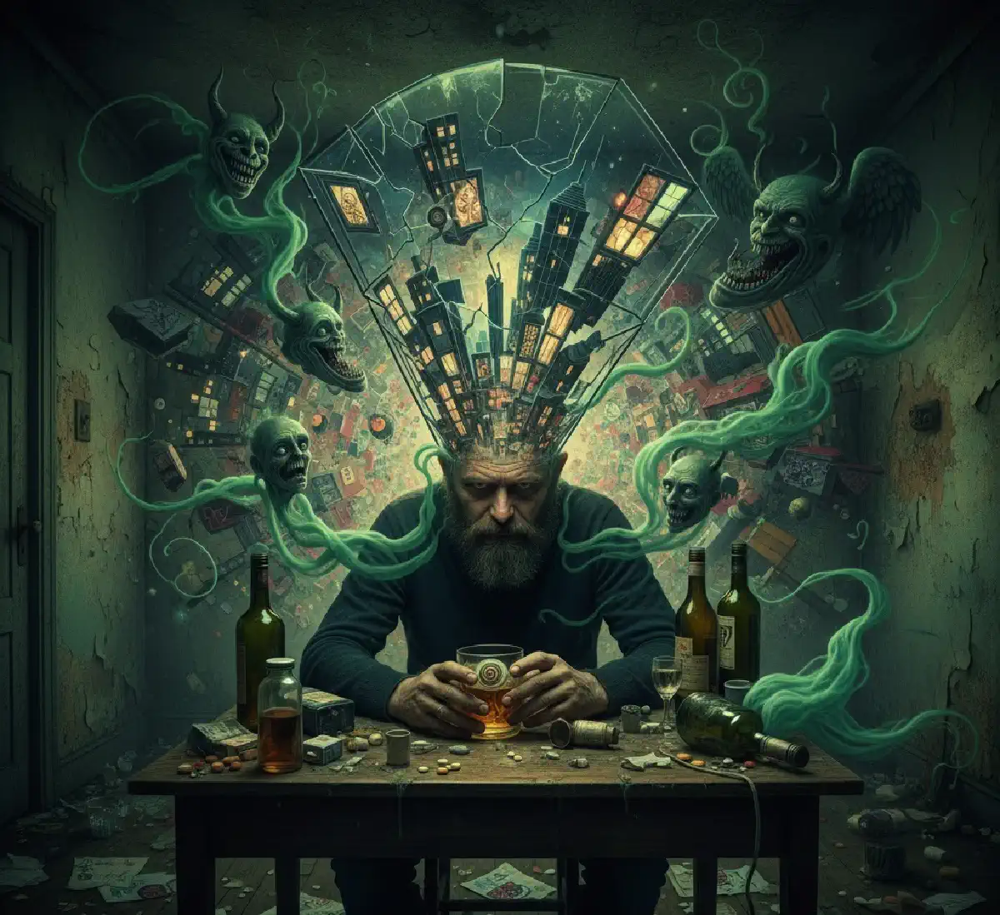

+38(068) 79 72 782
+38(068) 79 72 782Алкогольна шизофренія - визначення та поняття
Грань між пияцтвом і божевіллям — тонше, ніж здається.


Безкоштовна консультація, працюємо цілодобово 24/7
Грань між пияцтвом і божевіллям — тонше, ніж здається.

Дата написання: 12 жовт. 2025 р.
Останнє оновлення: 12 жовт. 2025 р.
Алкогольна шизофренія — це побутова назва тяжких психічних порушень, які розвиваються на тлі тривалого вживання спиртного, хронічної інтоксикації або після затяжного запою. У медичній практиці частіше використовують точніші терміни: алкогольний психоз, алкогольний галюциноз, делірій або психотичний розлад, спричинений алкоголем. Такий стан супроводжується порушенням сприйняття реальності, сильною тривогою, галюцинаціями, маячними ідеями, безсонням, страхом, агресією або вираженою дезорієнтацією.
Алкогольні психози потребують своєчасної медичної допомоги. Без лікування стан може швидко погіршуватися: людина втрачає здатність критично оцінювати те, що відбувається, стає непередбачуваною, може неправильно сприймати слова та дії близьких. Особливо небезпечні ситуації, коли психічні порушення з’являються після тривалого запою, різкої відмови від алкоголю або на тлі тяжкої інтоксикації. У таких випадках важливо не чекати, що стан мине самостійно, а якомога раніше звернутися до фахівців.
Термін «алкогольна шизофренія» часто використовують у розмовній мові, коли в людини на тлі алкоголю з’являються галюцинації, маячення, підозрілість, страхи, дивна поведінка та втрата зв’язку з реальністю. Однак з медичної точки зору коректніше говорити про алкогольний психоз. Шизофренія — це окреме психічне захворювання, а алкогольний психоз розвивається через токсичний вплив етанолу на головний мозок і нервову систему.
Правильна діагностика має велике значення, адже від неї залежить подальша тактика лікування. При психозі, спричиненому алкоголем, допомога має бути спрямована не лише на усунення галюцинацій, тривоги та маячних ідей, а й на зняття інтоксикації, відновлення сну, підтримку нервової системи та лікування самої залежності. При виражених симптомах пацієнту може знадобитися лікування алкогольного психозу в Києві під наглядом фахівців, особливо якщо стан супроводжується безсонням, страхом, дезорієнтацією або агресивною поведінкою.
Основна причина розвитку алкогольного психозу — тривалий токсичний вплив спиртного на головний мозок. При регулярному вживанні алкоголю порушується робота нервової системи, погіршується обмін речовин, страждає сон, розвивається дефіцит вітамінів групи B, перевантажуються печінка, серце та судини. Поступово психіка стає більш вразливою, а ризик тяжких порушень сприйняття й поведінки зростає.
Особливо часто психотичні стани виникають після тривалих запоїв, різкого припинення вживання алкоголю, вираженого виснаження, зневоднення та тривалого безсоння. Додатковими факторами ризику можуть бути хронічні захворювання, травми голови, стрес, тривожні розлади та багаторічна алкогольна залежність. У таких ситуаціях людині потрібна не лише екстрена стабілізація стану, а й повноцінна наркологічна допомога при алкоголізмі в Харкові , спрямована на усунення причини проблеми та профілактику повторних епізодів.
Симптоми алкогольного психозу можуть з’являтися поступово або розвиватися різко, особливо після тривалого запою, різкої відмови від спиртного або вираженої інтоксикації. Спочатку людина стає тривожною, дратівливою, підозрілою, погано спить, часто прокидається, здригається від звуків, скаржиться на внутрішнє напруження, страх або відчуття небезпеки, що наближається. Поведінка змінюється: пацієнт може замикатися в собі, прислухатися до неіснуючих звуків, перевіряти двері та вікна, уникати спілкування або, навпаки, ставати конфліктним.
У міру погіршення стану приєднуються галюцинації, маячні ідеї, порушення мислення та втрата зв’язку з реальністю. Людина може чути голоси, бачити лякаючі образи, вважати, що за нею стежать, її хочуть отруїти, обдурити або завдати шкоди. При цьому вона сприймає свої переживання як реальні й часто не розуміє, що потребує медичної допомоги.
До основних симптомів алкогольного психозу належать слухові та зорові галюцинації, безсоння, виражена тривога, паніка, маячення переслідування, агресія, сплутаність свідомості, тремор, прискорене серцебиття, стрибки тиску, сильна слабкість і загальне виснаження. Особливо небезпечно, якщо людина не спить кілька діб, розмовляє з «голосами», намагається піти з дому, відмовляється від допомоги або поводиться непередбачувано.
Галюцинації є однією з найбільш тривожних і небезпечних ознак алкогольного психозу. Найчастіше в пацієнта виникають слухові галюцинації: людина чує голоси, погрози, звинувачення, накази або розмови про себе. Їй може здаватися, що оточення обговорює її, стежить за нею, хоче завдати шкоди або змушує щось зробити. Такі відчуття сприймаються як реальні, тому пацієнт відчуває сильний страх, тривогу й паніку.
На тлі слухових галюцинацій людина може намагатися захищатися, ховатися, тікати з дому, зачинятися в кімнаті, відмовлятися від спілкування або проявляти агресію. Небезпека полягає в тому, що пацієнт не усвідомлює хворобливий характер того, що відбувається, і діє так, ніби загроза справді існує. У такому стані звичайні слова або дії близьких можуть сприйматися спотворено й посилювати напруження.
Іноді при алкогольному психозі виникають зорові галюцинації. Людина може бачити тіні, людей, тварин, комах, лякаючі образи або інші об’єкти, яких насправді немає. Зорові обмани сприйняття частіше посилюються ввечері та вночі, особливо на тлі безсоння, виснаження й вираженої інтоксикації. При появі таких симптомів важливо не сперечатися з пацієнтом, не висміювати його стан і не доводити грубо, що «нічого немає». Необхідно спокійно обмежити провокуючі фактори та організувати лікарську допомогу.
Маячні ідеї при алкогольному психозі часто пов’язані з переслідуванням, ревнощами, загрозою, змовою або відчуттям постійної небезпеки. Людині може здаватися, що родичі, сусіди, знайомі або незнайомі люди хочуть завдати їй шкоди, отруїти, обдурити, пограбувати або спеціально стежать за нею. Звичайні побутові ситуації починають сприйматися спотворено: розмови близьких здаються підозрілими, випадкові погляди — ворожими, а звичні звуки — підтвердженням уявної загрози.
На тлі маячних ідей пацієнт стає напруженим, недовірливим і конфліктним. Він може відмовлятися від їжі, ліків або допомоги, бо вважає, що його хочуть отруїти або нашкодити йому. Іноді людина починає перевіряти вікна й двері, ховатися, телефонувати знайомим, вимагати захисту або звинувачувати близьких у подіях, яких насправді не було. При цьому переконати її логічними аргументами майже неможливо, тому що критичне сприйняття реальності порушене.
Порушення мислення проявляється сплутаністю, нелогічністю висновків, різкими змінами теми розмови, підозрілістю та емоційною нестабільністю. Пацієнт може говорити уривчасто, будувати дивні зв’язки між подіями, неправильно розуміти слова оточення й робити висновки, що не відповідають реальності. У такій ситуації важливо не сперечатися, не тиснути й не намагатися силою довести людині, що вона помиляється. Безпечніше зберігати спокій і якомога раніше звернутися до фахівців.
Алкоголь чинить токсичний вплив на головний мозок, нервові клітини та центральну нервову систему. При регулярному вживанні порушується робота нейромедіаторів — речовин, які відповідають за настрій, сон, тривогу, концентрацію, пам’ять і контроль поведінки. Спочатку спиртне може створювати відчуття розслаблення, але з часом організм звикає до алкоголю, а психіка стає дедалі нестабільнішою.
На тлі хронічного вживання погіршується емоційний контроль. З’являються дратівливість, тривожність, запальність, підозрілість, порушення сну, апатія або депресивні реакції. Знижується здатність концентруватися, погіршується пам’ять, уповільнюється мислення, людині стає складніше приймати рішення й адекватно оцінювати наслідки своїх вчинків. Чим довше триває залежність, тим сильніше страждає нервова система.
Особливо небезпечне поєднання алкоголю з безсонням, виснаженням, поганим харчуванням і хронічними захворюваннями. Організм втрачає вітаміни, порушується обмін речовин, страждають печінка, серце, судини та головний мозок. Усе це підвищує ризик психотичних станів, при яких людина втрачає зв’язок із реальністю, починає чути голоси, бачити лякаючі образи або вірити в неіснуючу загрозу.
Після тривалого запою ризик алкогольного психозу особливо високий. У цей період організм перебуває в стані вираженої інтоксикації: печінка перевантажена, нервова система виснажена, сон порушений, водно-сольовий баланс збитий, а головний мозок продовжує страждати від токсичного впливу алкоголю. Навіть якщо людина вже припинила пити, небезпечні симптоми можуть з’явитися не одразу, а через кілька годин або днів після виходу із запою.
На тлі відміни алкоголю психіка може реагувати вкрай нестабільно. У пацієнта з’являються сильна тривога, страх, внутрішнє напруження, безсоння, тремтіння, прискорене серцебиття та стрибки тиску. Потім можуть приєднуватися галюцинації, маячні ідеї, підозрілість, паніка й дезорієнтація. Людина може не розуміти, де вона перебуває, неправильно сприймати близьких, чути голоси або бачити лякаючі образи.
Небезпека такого стану полягає в його непередбачуваності. Пацієнт може раптово намагатися піти з дому, захищатися від уявної загрози, конфліктувати з родичами або відмовлятися від допомоги. Тому вихід із запою має проходити під медичним контролем. При погіршенні психічного стану може знадобитися виведення із запою в Одесі з подальшою стабілізацією стану та лікуванням алкогольної залежності.
Перші ознаки алкогольного психозу часто залишаються непоміченими, тому що на початковому етапі вони можуть нагадувати звичайну тривогу, втому або наслідки запою. Людина стає неспокійною, дратівливою, погано спить, часто прокидається, здригається від звуків, скаржиться на внутрішнє напруження, страх або відчуття небезпеки. Близькі можуть помічати, що її поведінка стала незвичною, настороженою або надто емоційною.
Поступово з’являються підозрілість, різкі перепади настрою, агресія, замкнутість або дивні висловлювання. Пацієнт може говорити, що за ним спостерігають, його обговорюють, хочуть обдурити або завдати шкоди. Іноді він починає прислухатися до звуків, перевіряти двері та вікна, боятися залишатися наодинці, відмовлятися від їжі або уникати контакту з близькими.
Також насторожують розмови із самим собою, скарги на голоси, нічні кошмари, повне безсоння, сплутаність думок і неадекватні реакції на звичайні ситуації. Чим раніше близькі помітять такі симптоми, тим вищий шанс запобігти тяжким ускладненням. У подібних випадках може знадобитися детоксикація від алкоголю в Дніпрі , якщо ознаки психічних порушень пов’язані з інтоксикацією, запоєм і загальним виснаженням організму.
Без лікування алкогольний психоз може призвести до тяжких наслідків для здоров’я, психіки та безпеки пацієнта. У людини посилюються галюцинації, маячні ідеї, страх, збудження й дезорієнтація. Вона перестає правильно сприймати навколишню обстановку, може не впізнавати близьких, неправильно розуміти їхні слова та дії, бачити загрозу там, де її немає. На цьому тлі поведінка стає непередбачуваною.
Особливо небезпечні стани, при яких пацієнт не спить кілька діб, чує загрозливі голоси, бачить лякаючі образи або повністю втрачає зв’язок із реальністю. Він може намагатися втекти з дому, захищатися від уявної небезпеки, конфліктувати з оточенням, випадково травмуватися або спровокувати небезпечну ситуацію. При вираженому психозі людині потрібна не просто підтримка родичів, а професійна медична допомога.
Крім гострих ризиків, відсутність лікування прискорює руйнування нервової системи та посилює перебіг алкогольної залежності. Повторні психози можуть протікати важче, тривати довше й гірше піддаватися корекції. Після кожного такого епізоду відновлення психіки може займати більше часу, а ризик нових порушень стає вищим, особливо якщо людина продовжує вживати спиртне.
Алкогольний психоз піддається лікуванню, особливо якщо медична допомога розпочата своєчасно. Чим раніше пацієнт потрапляє під нагляд фахівців, тим вища ймовірність стабілізувати стан, зменшити тривогу, відновити сон, знизити вираженість галюцинацій і запобігти подальшому погіршенню. Важливо розуміти, що йдеться не про самостійне «заспокоєння», а про комплексну терапію під контролем лікаря.
Тактика лікування залежить від стану пацієнта, тривалості вживання алкоголю, вираженості інтоксикації, наявності галюцинацій, маячення, безсоння, агресії, тривоги та супутніх захворювань. На першому етапі лікарі оцінюють фізичний і психічний стан, контролюють тиск, пульс, рівень свідомості, ознаки зневоднення та загальне виснаження організму. Після цього підбирається безпечна схема допомоги.
Головне завдання в гострий період — стабілізувати психіку, зняти збудження, відновити сон, зменшити токсичне навантаження та запобігти ускладненням. Однак усунення психозу — це лише частина лікування. Якщо після покращення стану людина знову повертається до алкоголю, ризик повторного епізоду залишається дуже високим. Тому важливо лікувати не лише наслідки, а й саму залежність.
Медикаментозна допомога при алкогольному психозі підбирається суворо індивідуально. Лікар оцінює тиск, пульс, рівень свідомості, вираженість тривоги, наявність галюцинацій, маячних ідей, безсоння, тремору, зневоднення та інших симптомів. Також враховуються вік пацієнта, тривалість запою, загальний стан організму, наявність хронічних захворювань серця, печінки, нирок і нервової системи.
Самостійний прийом препаратів у такій ситуації небезпечний. Неправильно підібрані ліки, випадкові дозування або поєднання кількох засобів можуть погіршити стан, посилити сплутаність свідомості, вплинути на тиск, дихання або роботу серця. Особливо небезпечно намагатися «заспокоїти» пацієнта без огляду лікаря, якщо в нього є галюцинації, виражена агресія, дезорієнтація або повне безсоння.
Лікування може включати засоби для зниження психомоторного збудження, зменшення тривоги, нормалізації сну, підтримки серцево-судинної системи, печінки, судин і нервової системи. За потреби проводиться інфузійна терапія, корекція водно-електролітного балансу, поповнення дефіцитів і загальне відновлення організму після інтоксикації. Для пацієнтів, які бояться розголосу або постановки на облік, важливим рішенням може стати анонімна допомога нарколога у Львові з дотриманням конфіденційності та делікатним підходом до лікування.
Детоксикація є важливою частиною комплексної допомоги при алкогольному психозі, тому що психічні порушення часто розвиваються на тлі вираженої інтоксикації, зневоднення, виснаження та порушення обміну речовин. Після тривалого вживання алкоголю організм відчуває серйозне навантаження: страждають печінка, серце, судини, головний мозок, нервова система та шлунково-кишковий тракт. Без медичної підтримки ризик ускладнень значно підвищується.
Основне завдання детоксикації — знизити токсичне навантаження, відновити водно-сольовий баланс, підтримати роботу внутрішніх органів і створити умови для стабілізації психіки. Коли організм перевантажений продуктами розпаду алкоголю, тривога, безсоння, тремор, слабкість і сплутаність свідомості можуть посилюватися. Саме тому очищення та відновлення організму часто стають першим етапом допомоги при тяжкому стані після запою.
Склад крапельниці підбирається після огляду пацієнта. Лікар враховує тривалість запою, загальний стан, тиск, пульс, наявність блювання, зневоднення, хронічних захворювань, тривоги, безсоння й ознак психічних порушень. Важливо розуміти, що детоксикація не замінює лікування алкогольного психозу, якщо в людини вже з’явилися галюцинації, маячення або виражена дезорієнтація. У таких випадках потрібна комплексна терапія: стабілізація фізичного стану, медикаментозна допомога, спостереження лікаря та подальше лікування залежності.
Якщо в близької людини з’явилися ознаки алкогольного психозу, важливо зберігати спокій і не посилювати напруження. Не потрібно сперечатися, кричати, звинувачувати, соромити або доводити, що її страхи й галюцинації нереальні. У такому стані людина сприймає те, що відбувається, спотворено, тому тиск з боку родичів може посилити тривогу, недовіру й агресію.
Краще говорити спокійно, короткими та зрозумілими фразами. Важливо не робити різких рухів, не вступати в конфлікт, не висміювати переживання пацієнта й не залишати його самого, якщо поведінка стала непередбачуваною. За можливості потрібно зменшити кількість подразників: прибрати гучні звуки, яскраве світло, зайвих людей і все, що може посилити страх або збудження. Головне завдання близьких — не «переспорити» людину, а зберегти безпеку та організувати лікарську допомогу.
Особливо важливо звернутися по медичну допомогу, якщо людина не спить, чує голоси, бачить лякаючі образи, поводиться агресивно, намагається піти з дому, виражає сильний страх, відмовляється від їжі та води або повністю втратила орієнтацію. Якщо подібний стан розвивається після тривалого вживання спиртного, пацієнту може знадобитися лікування алкогольної залежності в Запоріжжі , щоб усунути не лише гострі прояви психозу, а й причину його розвитку.
Після купірування гострого стану важливо продовжити лікування, тому що зникнення галюцинацій, тривоги або маячення ще не означає повного одужання. Організм і нервова система залишаються ослабленими, сон може довго відновлюватися, а емоційна нестабільність, дратівливість, тривожність і тяга до алкоголю можуть зберігатися. Саме тому реабілітація після алкогольного психозу відіграє ключову роль у довгостроковому відновленні.
Реабілітація допомагає відновити психіку, знизити ризик повторного вживання алкоголю, стабілізувати емоційний стан і повернути людині контроль над своїм життям. На цьому етапі важливо поступово нормалізувати режим дня, сон, харчування, фізичну активність і психологічний стан. Пацієнту може знадобитися підтримка фахівців, які допоможуть впоратися з тривогою, почуттям провини, страхом повторення психозу та тягою до спиртного.
Реабілітаційна програма може включати індивідуальну психотерапію, роботу з мотивацією до тверезості, профілактику зривів, сімейні консультації, відновлення соціальних навичок і формування нових звичок. Особлива увага приділяється причинам залежності: стресу, внутрішнім конфліктам, оточенню, звичним сценаріям вживання та відсутності стійких способів справлятися з напруженням без алкоголю.
Головна профілактика повторних психічних порушень — повна відмова від алкоголю та комплексне лікування залежності. Навіть невеликі дози спиртного після перенесеного психозу можуть знову спровокувати погіршення стану, особливо якщо нервова система ще не відновилася. Тому пацієнту важливо розуміти: повернення до алкоголю після такого епізоду пов’язане з високим ризиком повторних галюцинацій, маячення, безсоння та дезорієнтації.
Профілактика має включати не лише відмову від спиртного, а й відновлення організму. Велике значення мають здоровий сон, регулярне харчування, зниження рівня стресу, спостереження у фахівців, підтримка близьких і своєчасне звернення по допомогу при перших ознаках зриву. Якщо людина знову починає погано спати, стає тривожною, підозрілою або дратівливою, це не можна ігнорувати.
Також важливо змінити звичний спосіб життя, який підтримував залежність. Пацієнту необхідно уникати ситуацій, пов’язаних із вживанням алкоголю, працювати з психологічними причинами залежності, зміцнювати мотивацію до тверезості та формувати безпечне середовище. Пацієнтам, які вже стикалися з галюцинаціями, маяченням або тяжким станом після запою, може знадобитися наркологічна допомога в Черкасах із подальшою профілактикою повторних психічних порушень і підтримкою тверезості.

Статтю перевірено експертом
Могучев Станіслав
Лікар-терапевт, ординатор
Можливо цікава стаття:
Янтарна кислота, Бетаргін та Ентеросгель при алкогольної інтоксикації

Так, ми суворо дотримуємося повної конфіденційності на всіх етапах лікування. Інформація про пацієнта, діагноз та проходження терапії не передається третім особам. Звернення до нас не тягне за собою постановку на облік. Ви можете бути впевнені у безпеці та анонімності.
Програма лікування розробляється індивідуально після консультації з фахівцем. Враховуються вид залежності, її тривалість, фізичний та психологічний стан пацієнта. Такий підхід дозволяє підвищити ефективність терапії та знизити ризик зриву. Ми не використовуємо шаблонні рішення.
Так, ми супроводжуємо пацієнтів і після основного курсу лікування. Проводяться консультації, рекомендації щодо адаптації та профілактики рецидивів. За потреби можлива подальша психологічна підтримка. Це допомагає зберегти результат та повернутися до повноцінного життя.
Номер телефону:
+380 (68) 797 27 82
+380 (50) 021 69 57
Адресу наркологічного центра вашого міста уточнюйте за
телефоном
Працюємо: Київ, Одеса, Львів, Харків, Дніпро, Запоріжжя,
Черкасах, Чугуєві, Чорноморську, Кам'янському
Telegram: t.me/umbrellaplus
Графік работы: Цілодобово